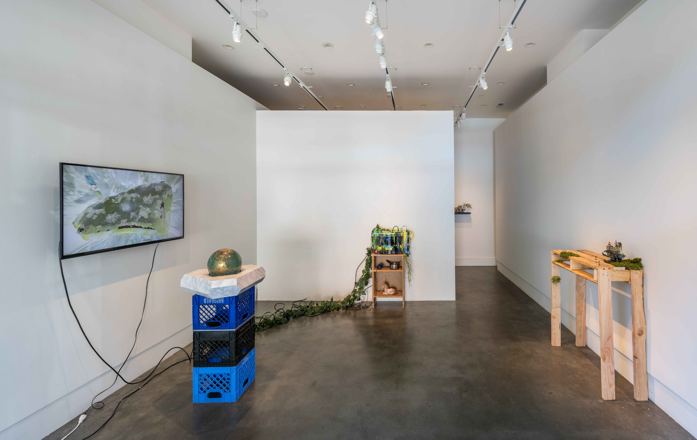
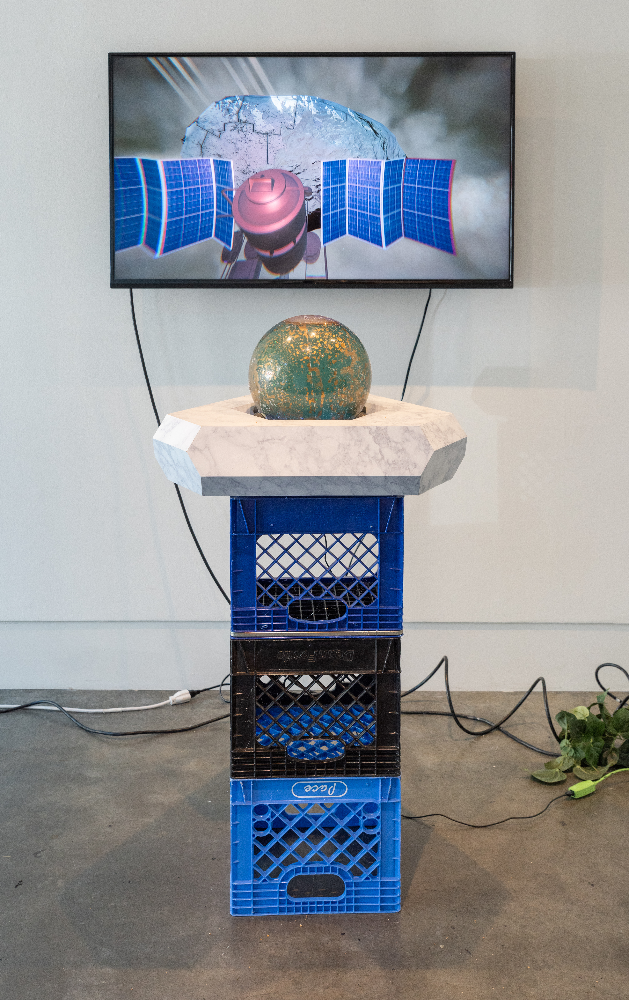
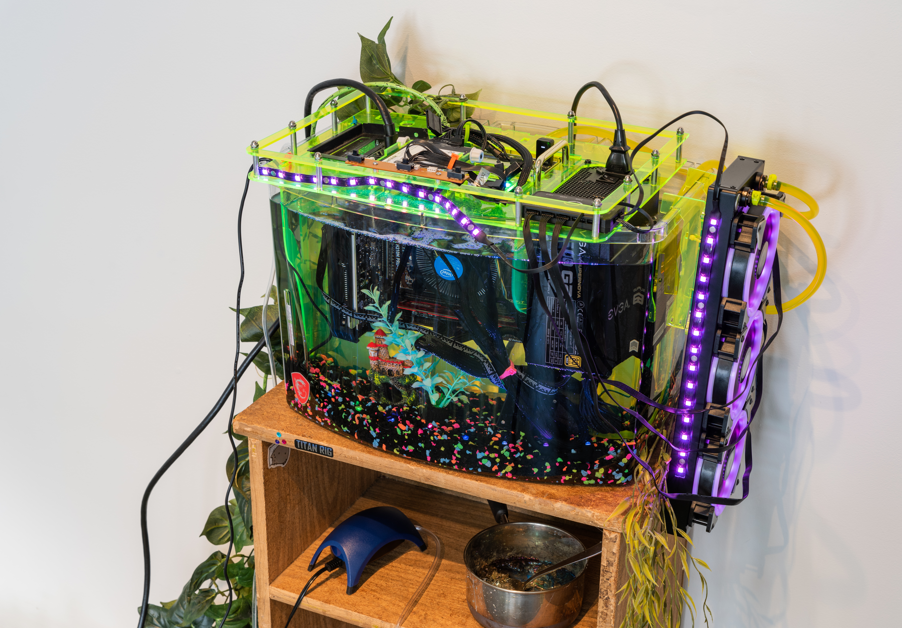
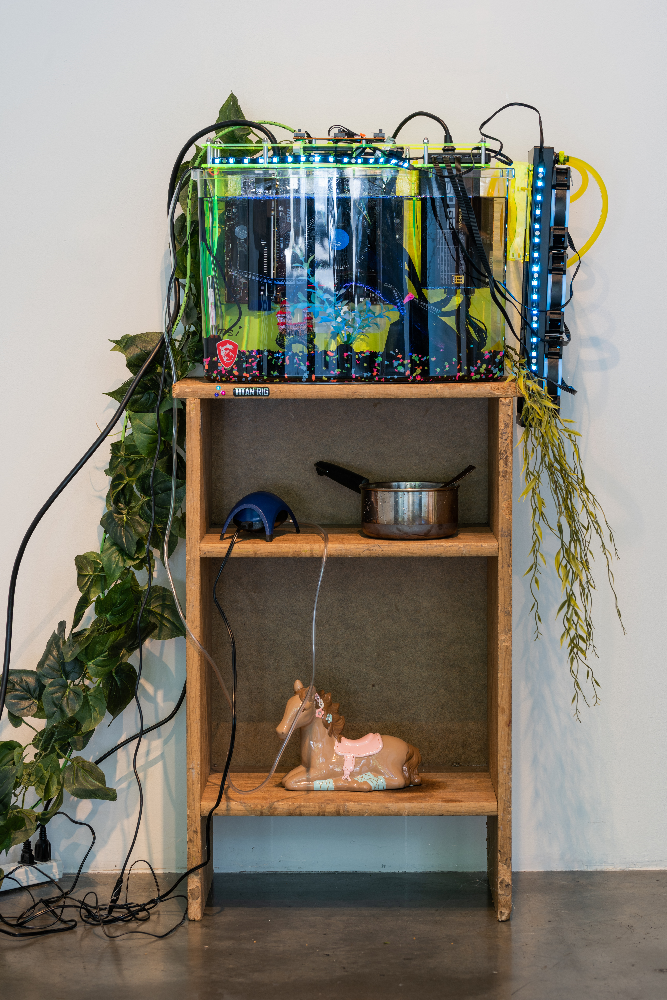
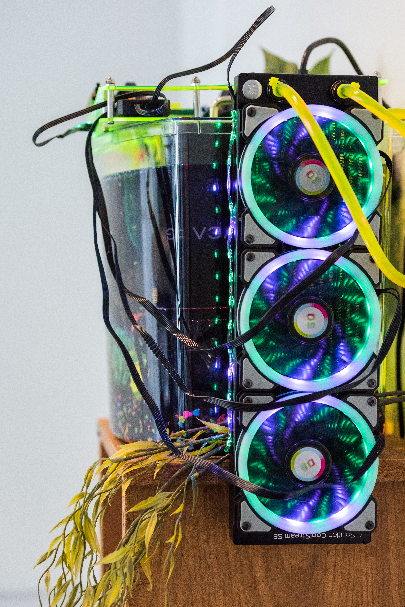
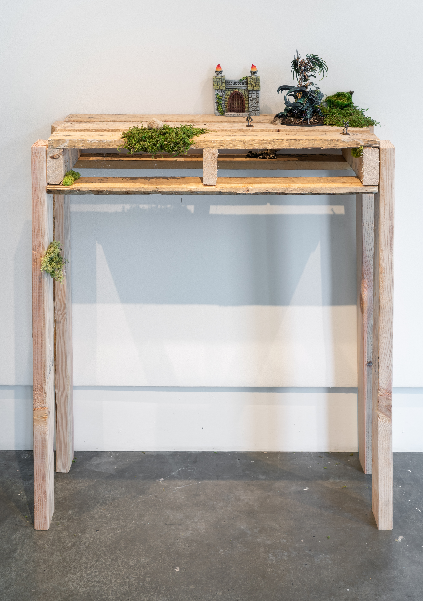
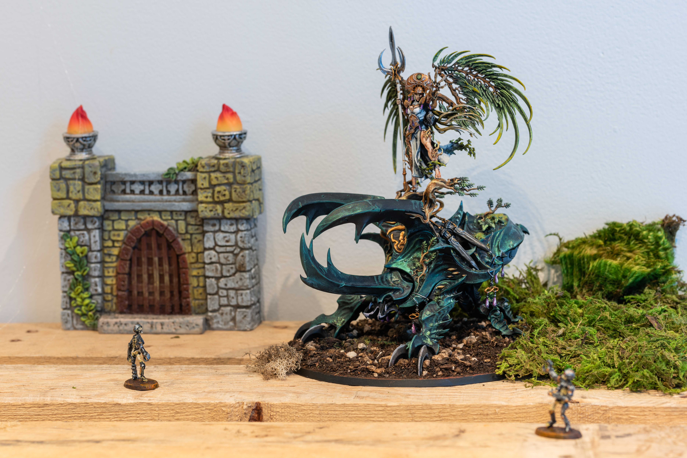
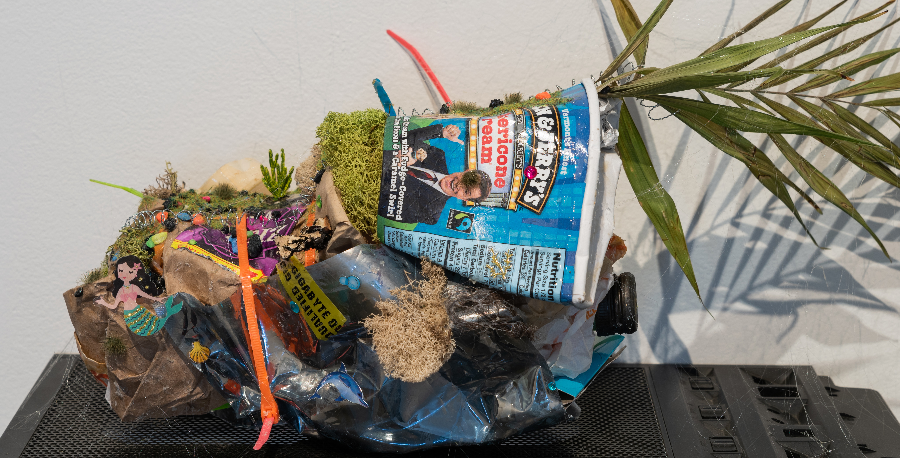

Utopia Without You

Utopia Without You is an elegy for American liberalism using the novel and nested forms of insulation that have helped make its death so palatable. Fashioned as a kind of gamer den of the apocalypse it ruminates on trans-pessimism and isolation as a Pyrrhic survival technique. Nestled within the velvet trap of the den there is freedom from visibility: both the threat of violence, and the horrors of being consumed like so many ill-digested ally cookies. Conversely, the Skinner box of the digital attenuates one to some combination of viciousness and vapidity. This is the bind, finding human connection in a way that acknowledges and transcends the pain of the real while evading the hunter's snares.







The music that appears in the digital environments was created by
Ada Rook.
Special thanks to
Jesse Mejia,
Francesca Frattaroli
and the PCC Cascadia Fab Lab for their technical prowess and generosity.
Thanks to
Matt Leavitt
for his assistance fabricating the controller base.
Documentation courtesy of
Mario Gallucci.
This work was funded in part by the Regional Arts & Culture Council of Oregon.